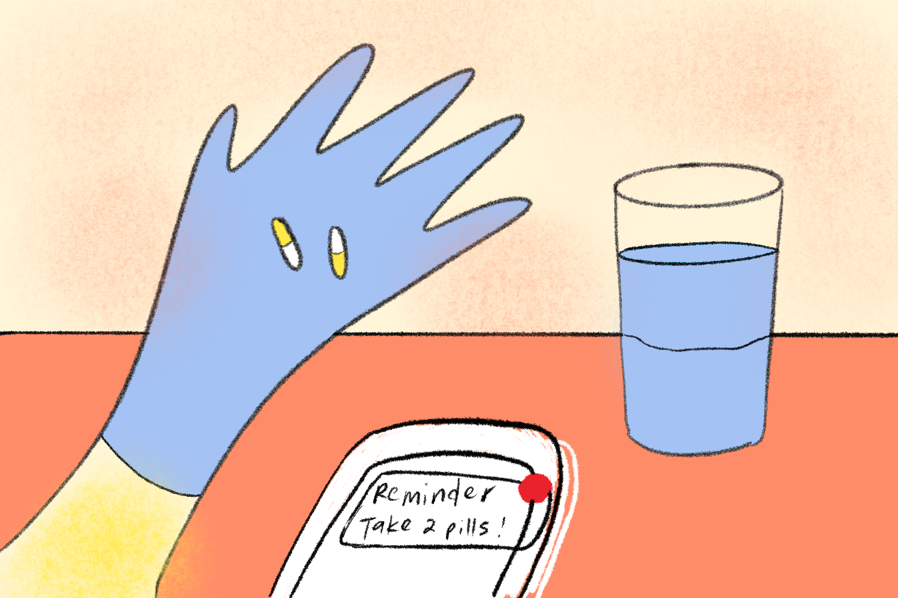
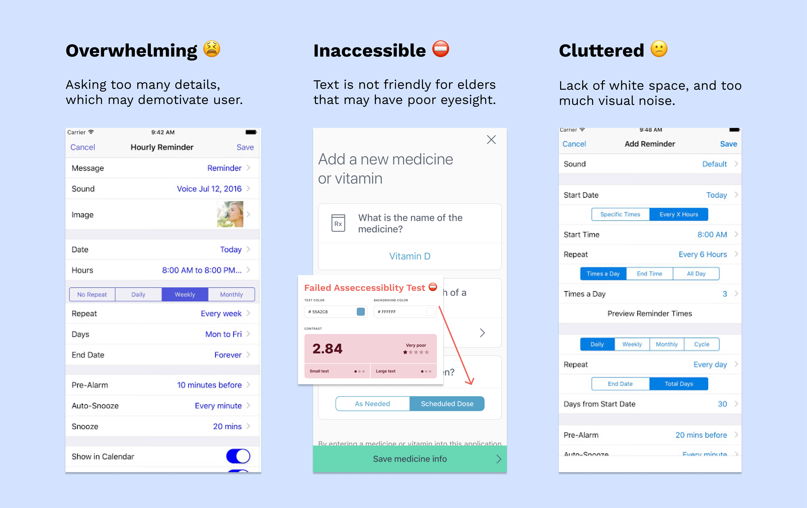
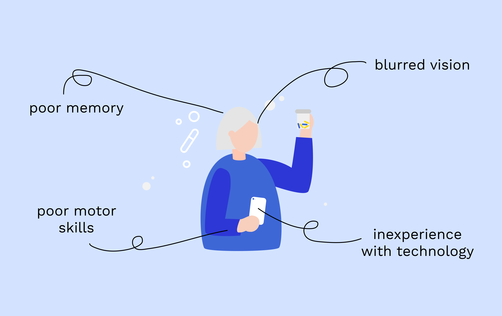
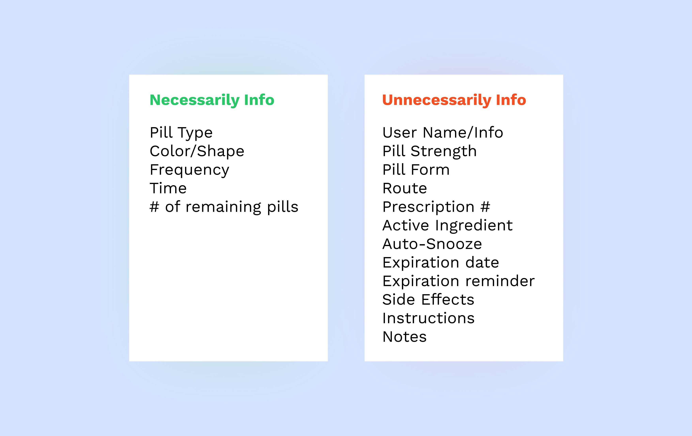
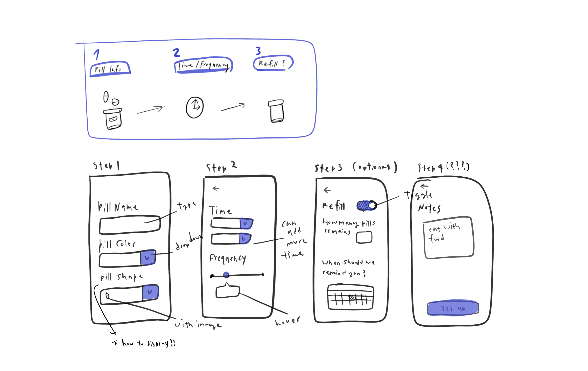
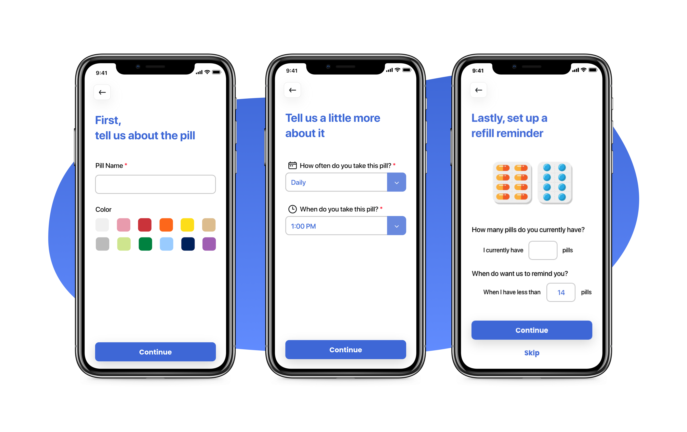

Pill Reminder Made Simple

Overview
Project
Personal Project
Scope
Product thinking, Interaction Design, Visual Design
Tool
Figma,
Adobe XD
Pill Reminder is a health application designed to remind patients to keep track and take pills regularly. Realizing that existing applications have inefficient workflows and cluttered interface. I redesigned a pill reminder that would shorten the reminder set up process and spark joy.
Introduction
To Start Off... During the beginning of winter quarter, I got sick and it wasn’t fun. I had to take pills every day to cure the sickness. However, I kept forgetting to take the pills and it got worse. I decided to download some apps to remind myself.
Problem
I quickly realized that with the existing pill reminder app, it is extremely difficult to set up a pill reminder. Here are some of the current pill reminder applications and the problems.

Research
I am not the main user for a pill reminder app, elders are. To really understand how user’s remind themselves to take pills on a daily basis, I interviewed 3 Parkinson’s disease patients. Medication is a significant part of Parkinson patients' recovery process. Specifically, I want to learn about their day-to-day and how they remind themselves to take multiple pills.
Talking to a 3 patients, here are the key insights I found:
1. Frustrating to set up a reminder üò´
Patients have tried various applications, and find most set-up processes difficult to customize and time consuming.
2. Patient‚Äôs cognitive state and experience with digital devices varies ü߆
Not all patients are able to remind themselves.
It’s not easy to set up the pill reminder, the process is long and I am not super comfortable with the technology.
3. Confused on whether they took the pill or not ü§î
Patients get confused on whether they took the pill today or yesterday.
Design for Elders
Learning that patients may be in different stages and have different cognitive states, I want to have a better understanding of the constraints I may face when designing for elders, which includes: vision, motor control, experience with tech, and cognition.
Opportunities
How might we simplify the set up workflow and remind user to take pills regularly?
Redesigning the set up workflow
1. Removing unccessaily information
I started by understanding what are the important information user would need during the set up process. Talking to users, I learned that they only care about a few core information, "I wouldn't bother to fill out things like auto-snooze."
2. Structuring the information in a logical and simple format
I sketched out the information architecture to organize the different information that requires user input.
3. Iterations: How might we setup the color and shape?
I went through multiple iterations on how to prompt user to input the pill color and shape. My initally thought was a simple dropdown form (screen 1), yet after revisiting I wanted to allow the user to choose the color accurately (screen 2 & 3). Learning that it would be difficult for elders to pick the colors with the small screensize, my final solution is to research on common colors for pills and medications and apply them to the color picker (screen 5). Due to variety of pill shapes and forms, I also decided to remove the option to shorten time it takes to input (screen 6).
4. Pill Reminder Set up Workflow: Redesigned ✅
Icons and images were added to help users better understand the information.
Bonus
Visual Design

Iterations
All coming along together
Simple Set-up Process
Setting up a pill reminder has never been so easy and straightforward. The step-by-step process allows users to not get overwhelmed.
Interactive Dashboard
Inform users when to take a specific pill to stay on track. This page also lists all upcoming pills that the user needs to take later in the day.
History
Help users keep track of when they take the pill. Green check marks inform the user that they have already taken the pill on that specific day.
My Pills
Give users the flexibility to add multiple medications and help them keep track of different pills.

Microinteraction
Microinteractions are added to prevent users from making mistakes and also to provide feedback.
Avioding Slips
Pop-up confirmation screen avoid users from accidentally pressing “Take Pill”

Providing Feedback
Reward users with positive feedback: recognition of job done, also avoid confusion
Reflection & Next Steps
Reflection
1. The design process is never linear. A human-centred methodology that is not necessarily sequential or linear. One is to decide on the most suitable steps ordering almost on the spot.
2. Complexion reduction works better than the other alignments.
In this project, I learned that when designing for elders “less is more”. I often spend a lot of time on creating animations and interactive elements. In this case, it is the opposite. It is important to emphasize and understand the primary users.
Next Steps
When I am designing, I like to think outside of the box (mobile interface). As for next step, I would like to explore designs on watch to help remind users. Additionally, include features that would assist severe user that cannot take care of themselves, so they can sync their pill reminder with their caregivers (right screen).